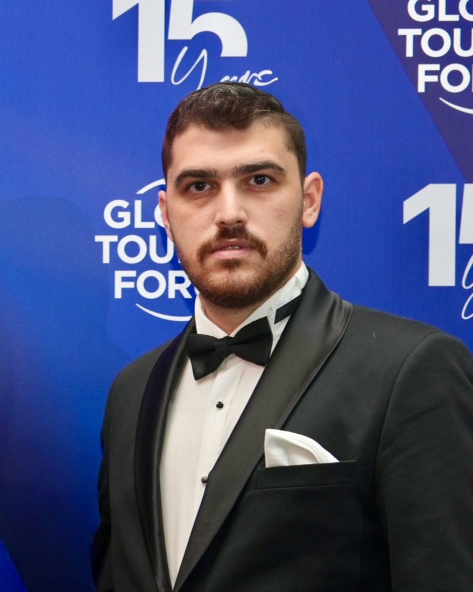

AI governance, information security, engineering
Musa Toktaş
I teach ISO/IEC 27001 and ISO/IEC 42001 as a BSI Associate Tutor. I build software and measure it.
I am a computer engineer and a former CTO, based in Dubai. For seven years I have led technology, product and compliance work for companies in travel, health tourism, SaaS and aerospace consulting, in the UAE, Europe and Turkey. I also write open source tools for TypeScript performance.
- BSIAssociate Tutor
- ISO/IEC 27001:2022Information security
- ISO/IEC 42001:2023AI management systems
- whytsTypeScript performance
- 7years leading technology, product and compliance
- 70person group I led as CTO
- 12,500+users on the Guide of Dubai app
- 9merged open source pull requests, Oct 2026
Focus
Where I spend my time
Management systems, the products they govern, and the code underneath.
-
01
ISO/IEC 42001
AI governance
BSI approved me to deliver its ISO/IEC 42001:2023 AI management system courses. I hold the ISO/IEC 42001 Lead Implementer qualification. In my own teams, AI coding agents ship only behind tests, review and human approval.
-
02
ISO/IEC 27001
Information security and GRC
I teach ISO/IEC 27001:2022 courses for BSI. I have built ISMS controls, risk assessments and audit readiness programs in travel, health tourism, SaaS and engineering companies, with GDPR and UAE PDPL in scope.
-
03
Product and engineering
Technology leadership
CTO of a 70-person health tourism group. Led the Guide of Dubai app to 12,500+ users. Led MBD Travel's travel-commerce platform, with an MCP server in the official MCP Registry.
-
04
Open source
TypeScript performance
I wrote whyts, a CLI and MCP server that finds why a TypeScript type check is slow. I send fixes upstream and measure them before and after.
Writing
Latest writing
Notes from measurements and fixes. Each one has the numbers and the code.
A 32-second TypeScript check, and the one NoInfer that fixed it
A typed middleware made each Telegraf on() call cost seconds of type checking. The trace pointed to inference. One NoInfer around the whole callback type took five calls from 32.0 s to 0.6 s.
Talks and training
Teaching and speaking
Courses I deliver and panels I have joined.
-
BSI Associate Tutor
ISO/IEC 27001:2022 ISMS and ISO/IEC 42001:2023 AIMS training courses, delivered on behalf of BSI.
-
Global Tourism Forum 2025
Panelist, "TechFront: AI & Tourism - The $500 Billion Transformation".
-
Certification engineering training
DO-178C, DO-254 and ARP-4754A consultancy and training for aerospace and defense clients in Europe and the GCC.
Open source
Selected open source
I measure before I change code.
My project
whyts
whyts finds out why a TypeScript project is slow. It runs your own compiler, reads the trace, and names the place and the cause. It runs as a CLI and as an MCP server, so a coding agent can measure a type change instead of guessing.
whyts on GitHubMerged upstream
- tRPCFix for TS2589 in
Serializewith recursive JSON types. whyts found the cause.#7660 - OpenClawA rejecting typing keepalive no longer crashes the process.#175381
- Chrome DevTools MCP
lighthouse_auditerror codes and viewport restore.#3188 - AWS CDK CLIOne
ListStackResourceslist per stack during hotswap.#2040
Contact
Get in touch
The best way to reach me is a message on LinkedIn. My code is on GitHub.